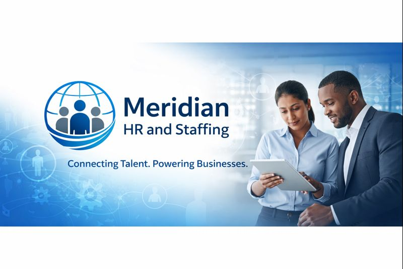

Good work happens
when people come first.
We help organisations find the people they need and manage the work that supports them—through practical HR services and thoughtful partnerships.

CONNECTING TALENT.POWERING BUSINESSES.
A workforce partner
that stays close to the work.
Meridian HR and Staffing is an India-focused provider of recruitment, contractual staffing, payroll management and HR operations support. We work with manufacturing plants, corporate offices, small and growing businesses and service organisations.
Our approach is straightforward: understand the requirement, communicate clearly, treat people fairly and keep the process moving. Whether you are building a team or managing a large workforce, our people work alongside yours.
Trust is built in
the everyday details.
We want clients and employees to know what to expect from us—and to see us follow through.
Integrity
Honest communication and responsible handling of every engagement.
People first
Respect, fairness and dignity in every workforce interaction.
Compliance minded
Careful processes and a consistent focus on statutory responsibilities.
Dependable delivery
Clear ownership, practical timelines and responsive day-to-day support.
A foundation for
responsible work.
Our company profile lists GST and Udyam registrations. Registration details are shared with clients as part of business onboarding.